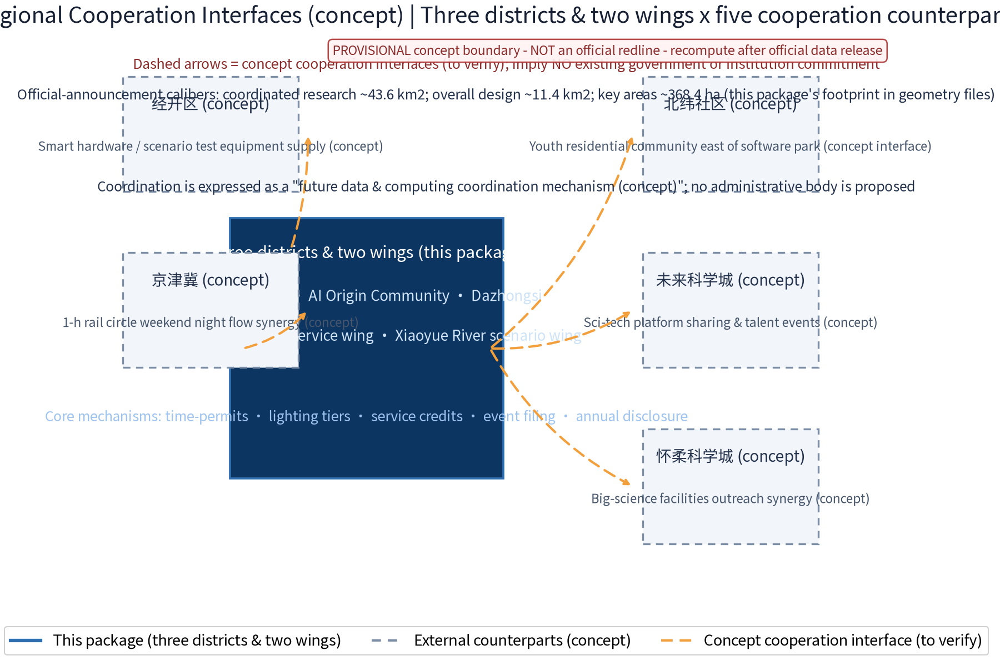
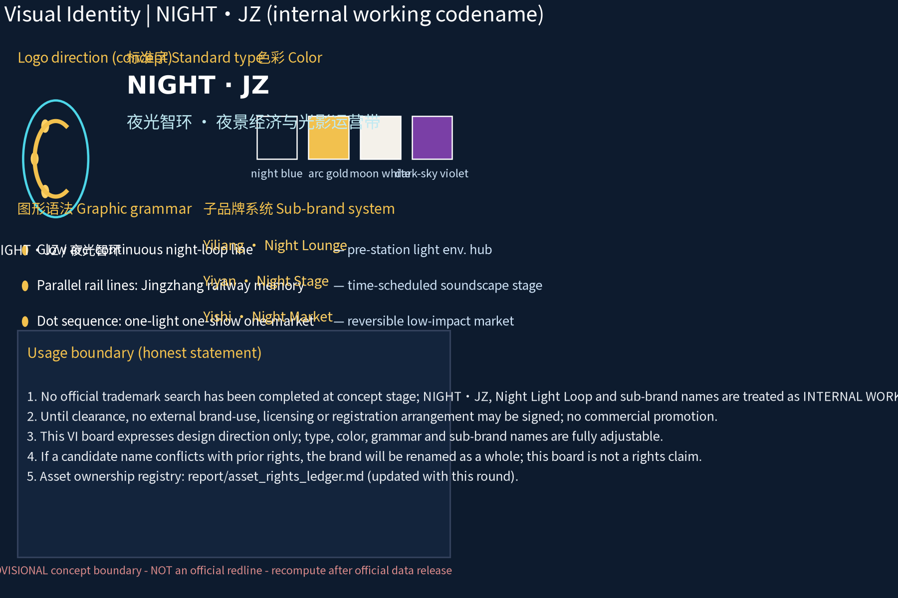
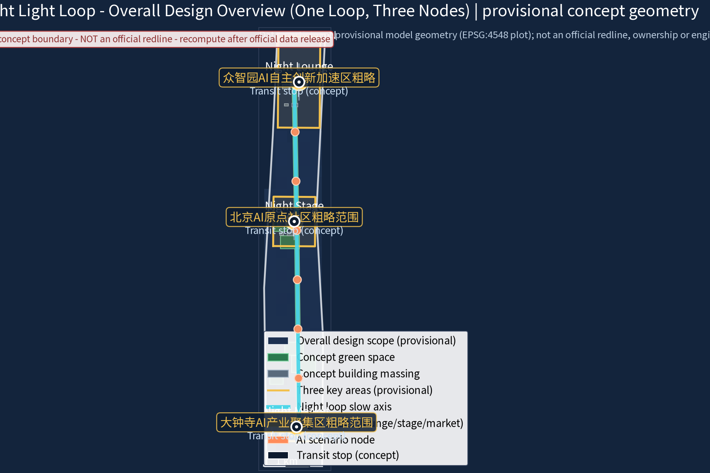
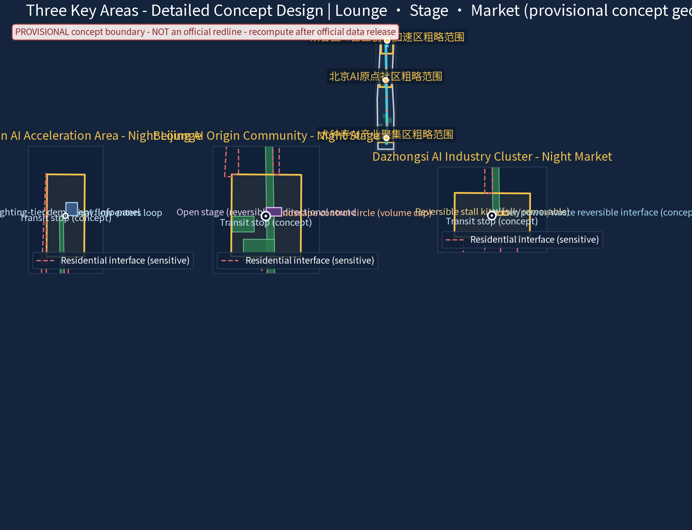
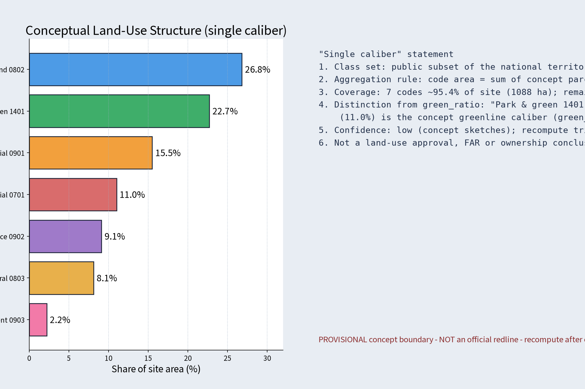

NIGHT·JZ Night Light Loop: Night Economy & Lightscape Operation Belt (Concept)
NIGHT·JZ (Night Light Loop: Night Economy & Lightscape Operation Belt) is a concept focused on the night economy along the Centennial Jingzhang AI Innovation Belt (mapped to the Night Vitality dimension of the youth-friendly public space track, the agent.6 event-system dimension, and the 'smart AI vibrant city' positioning of the official announcement): a 'One Light - One Show - One Market' night vitality network. The Night Lounge is a station-level lighting-tier and information hub (Zhongzhiyuan side); the Night Stage is an open performance venue with time-based control and soundscape design (AI Origin Community side); the Night Market is a low-impact, reversible-stall market (Dazhongsi side); the three nodes sit along the Jingzhang green belt as a continuous night route. Ten AI scenario cards (five core: night energy optimisation, crowd-density sensing, night guidance, stall matching, light-pollution monitoring) process anonymised aggregated data only, require human review for key decisions and prohibit over-monitoring (no individual-identifying tracking); three industry test protocols define sandbox boundaries and exit conditions. Mechanism elements are concept suggestions: time-based operation permits, night lighting tiers, night-economy service credits, event filing collaboration and annual light-environment disclosure. Benchmark cases (Bund & Yuyuan, Chengdu Jinjiang night cruise, Singapore Night Safari, Amsterdam Night Mayor, Yuyuan Lantern Festival, Seoul Night Market) are described only from public sources and registered case-by-case in the sources list. The three-tier scope follows official announcement text (coordinated research ~43.6 km2, overall design ~11.4 km2, key areas ~368.4 ha); regional cooperation interfaces (Beiwei Community, Future Science City, Huairou Science City, ETDZ, Beijing-Tianjin-Hebei) are all marked concept/pending verification with no implied government or institutional commitment. Slow mobility-first and low-intervention blue-green integration. The three formal core metrics (site_area_sqm, green_ratio, public_space_ratio) are recomputed from this package's geometry, displayed at reduced/rounded precision; all figures are concept suggestions on a provisional boundary; recompute when official data is published. No FAR, building heights, detailed retain/renovate/demolish figures, lighting energy, investment or engineering conclusions are given; no official data, visitor numbers, stall counts or policy commitments are invented; brand names are internal working codenames pending trademark clearance.
Day belongs to innovation, night belongs to life. NIGHT·JZ organises the public spaces along the Jingzhang heritage park belt into an operable, governable and replicable night route: One Light, One Show and One Market nodes, closed-loop through five mechanisms - time-based permits, lighting tiers, service credits, event filing and annual disclosure. AI only proposes and summarises; permits and volume are always decided by people.
Design Basis and Reference List
This proposal follows the open call task book of the Centennial Jingzhang AI Innovation Belt urban design competition: three positioning themes (Centennial Jingzhang culture belt, urban AI living-experience belt, AI-integrated innovation belt), five functions (of which "smart AI vibrant city" is the direct match for this theme), and three districts with two wings (Zhongzhiyuan, AI Origin Community and Dazhongsi districts; Zhongguancun tech-service wing and Xiaoyue River scenario-enabling wing). The theme maps to the Night Vitality dimension of the youth-friendly public space track, the agent.6 event-system dimension and the smart AI vibrant city positioning.
The official announcement states the three-tier scope in text: coordinated research scope approx. 43.6 km2, overall design scope approx. 11.4 km2, and key detailed-design areas approx. 368.4 ha. This package's sub-scope is a night-economy concept inside the overall design scope (night vitality and operation-governance dimensions); its footprint geometry is provisional concept geometry - it is not a full correspondence of the official scopes and not an official redline.
Reference list: task book excerpts and full excerpts (including prohibited-expression list), submission skill documents, reference sample proposals, public standards and regulations; benchmark cases are registered case-by-case in the Benchmark Cases & Source Registration table and sources.json, described only as public-channel overviews without unverified data details. As of this draft, the repository has not provided official overall boundaries or key-area polygons; the proposal uses provisional geometry labelled as such, to be fully recomputed and replaced when official data is released. All spatial suggestions are open co-creation concept suggestions and reference proposals for professional teams to deepen; they do not substitute formal planning or constitute government conclusions.
Proposal evidence anchors use short IDs that map one-to-one to the full sources.json entries: DATA-SRC-OFFICIAL-ANNOUNCEMENT <-> DATA-SRC-OFFICIAL-ANNOUNCEMENT-2026-05-09; DATA-SRC-AGENT-TASKBOOK <-> DATA-SRC-AGENT-TASKBOOK-2026-05-18; DATA-SRC-PROVISIONAL-BOUNDARIES <-> DATA-SRC-PROVISIONAL-BOUNDARIES-2026-06-05; DATA-SRC-GENERATIVE-AI-MEASURES <-> DATA-SRC-GENERATIVE-AI-INTERIM-MEASURES; DATA-SRC-MNR-LAND-USE-CLASSIFICATION <-> DATA-SRC-MNR-LAND-USE-CLASSIFICATION-2023-11-22.
Evidence anchors: Source, Source (organiser announcement and task book are the textual-caliber basis).
Three-Tier Scope Working Framework
The concept proceeds on three tiers through "industry research - spatial structure - node operation - evidence recomputation". The coordinated research scope answers how the night economy and night governance become a long-term operational asset of the belt (producing the night-economy positioning, AI night-scenario library, operation mechanism elements and benchmark case method library); the overall design scope answers where the Night Loop lands and how it shares daytime space (producing the One Loop Three Nodes structure, lighting-tier framework and regulatory-planning-depth urban design expression); the key-area scope places the Night Lounge, Night Stage and Night Market at the functional, spatial and public-experience interface level, with relocatable concept prototypes.
All three tiers share the same provisional temporary geometry: it expresses design structure and content review only, and does not describe statutory redlines, ownership or engineering positioning; after official geometry is released, every tier is recomputed by the same rule, and the structure itself can be re-fit.
Regional cooperation (concept interfaces, not existing arrangements): with the three districts and two wings as the core footprint, this package proposes five conceptual cooperation directions - with Beiwei Community (night vitality linkage with a youth residential community), Future Science City (sharing of tech platforms and talent events), Huairou Science City (big-science outreach and night-route synergy), ETDZ (supply of smart hardware and scenario-test equipment) and the Beijing-Tianjin-Hebei region (weekend night-traveler synergy of the one-hour rail circle). All cooperation relations are labelled concept/pending verification with no implication of existing government or institutional commitments; coordination is expressed as a "future data and computing coordination mechanism (concept)" and no administrative body is proposed.

| Cooperation counterpart | Cooperation content (concept interface) | Status and boundary |
|---|---|---|
| Beiwei Community | Night-return slow routes and vitality-time connection with a youth residential community | Concept; pending resident consultation and measured baseline |
| Future Science City | Linkage of sci-tech events, showcases and night public experience | Concept; no resource commitment |
| Huairou Science City | Science communication, open days and night-route synergy | Concept; pending official interface confirmation |
| ETDZ | Supply of smart hardware, scenario-test equipment and pilot content | Concept; not a procurement or cooperation intent |
| Beijing-Tianjin-Hebei | Weekend night-traveler and destination linkage on the one-hour rail circle | Concept; no visitor data cited |
Evidence anchors: Source (three-tier scope split follows the official task book text); Source (cooperation diagram is a concept schematic, not an official cooperation network).
Brand & Visual Identity (NIGHT·JZ Logo and Mark)
Brand naming system: primary Chinese name "Night Light Loop", English name NIGHT·JZ (internal abbreviation of Night-Economy & Lightscape Joint Zone), operation brand "Night Economy & Lightscape Operation Belt". At this stage the names are treated strictly as internal working codenames: no official trademark search has been completed at concept stage; until official search and clearance are completed, no brand-use, licensing or registration arrangements may be signed with any external party, and no commercial promotion is permitted; if a candidate name conflicts with prior rights, the brand will be renamed as a whole. Brand asset ownership, reuse boundaries and generation methods are registered in the copyright statement and asset ledger.
Visual identity direction (concept): the logo uses a "glow arc plus three dots" motif expressing the One Loop Three Nodes, with parallel rail lines continuing the Jingzhang railway industrial memory; standard type NIGHT·JZ / Night Light Loop; primary colors night blue, arc gold and moon white, with dark-sky violet as accent; the sub-brand system is One Light (Night Lounge), One Show (Night Stage), One Market (Night Market), corresponding to the annual programme system (Night Market Season, Summer Open Stage, Winter Light Festival - all concept). The logo, VI board and usage boundary are shown below.

Evidence anchors: Source (brand and event-system dimension maps to the agent task requirements).
Coordinated Research Scope: Industry and Future-City Research
Night translation of the three positioning themes: culture belt - railway memory and light narrative connect the daytime heritage park with the night slow route; living-experience belt - night public life becomes an experienceable, operable AI city interface; innovation belt - the night economy becomes an open testbed for AI sensing, energy and guidance scenarios. "Smart AI vibrant city" is the main line among the five functions: the night-governance mechanism itself is a public product of urban intelligence.
Benchmark cases borrow mechanisms, not scales, and are registered case-by-case with public sources (details are not cited or invented; "first", "world's first" and similar claims are public-channel calibers, not independently fact-checked, to be treated as research hypotheses when necessary):
| Case (public-channel caliber) | Mechanism borrowed | Source registration (sources.json) | Status |
|---|---|---|---|
| Shanghai Bund and Yuyuan night tours | Centralised light control, lighting hours and crowd management, "light-show-market" night district | CASE-SRC-BUND-YUYUAN | Public overview |
| Chengdu Jinjiang night cruise | Waterfront-axis continuous night route and light narrative | CASE-SRC-JINJIANG | Public overview |
| Singapore Night Safari (opened 1994; public materials call it the world's first night zoo) | Time-differentiated operation plus moonlight-level low illuminance | CASE-SRC-NIGHT-SAFARI | Public caliber; independent verification pending |
| Amsterdam night mayor (public reports call it the world's first) | A dedicated coordinator connecting operators and residents | CASE-SRC-AMS-NIGHTMAYOR | Public-report caliber; verification pending |
| Shanghai Yuyuan Lantern Festival (public reports trace its modern run to 1995) | Traditional festival night tours, time-based control and resident consultation | CASE-SRC-YUYUAN-FAIR | Public caliber; verification pending |
| Seoul night market brand (public materials date its official launch to 2015) | Time-based market licensing and stallholder admission | CASE-SRC-SEOUL-NIGHT | Public caliber; verification pending |
Future-city research conclusion: the night city needs a governable operation paradigm of "permit - tier - credit - filing - disclosure", where AI performs calculation, summarisation and reminders, and humans keep the judgment. This conclusion is a research hypothesis to be validated by measured night visitor, noise and lighting baselines (currently missing; see the monitoring baseline table).
Evidence anchors: Source (boundary is provisional; research scope is a concept illustration only).
Overall Design Scope: Urban Renewal and Regulatory-Planning-Depth Urban Design
The concept overall structure is One Loop, Three Nodes: a Night Loop uses the Jingzhang heritage park belt and transit stops (concept locations) as its skeleton, connecting the Zhongzhiyuan, AI Origin Community and Dazhongsi nodes into a continuous but calm night slow route; lighting is tiered along the path - station-level bright gateways, path-level medium guidance, node-and-green low-brightness zones, plus reserved dark-sky friendly zones. Regulatory-planning depth is expressed as "problem - spatial object - indicator - data gap - recomputation path"; intensity indicators such as FAR and building height remain unknown and do not substitute for regulatory-planning approval.
Urban renewal is stock-first and reversibility-first: the three nodes prioritise existing plazas, public spaces and retainable buildings, using light-touch, removable light and operation components; no large new buildings and no land-use change are introduced for the night economy; the implementation order is "lighting tiers and environmental safety first, then performance and market operation, then governance mechanisms". East-west stitching and north-south connection extend through the night: the Night Loop shares pedestrian interfaces, seating and signage with the daytime public-space network without adding independent works. The temporary boundary is marked provisional and will be recomputed after official geometry is released.

Evidence anchors: Source, Source (regulatory-depth expression and provisional-boundary caution).
Key-Area Detailed Design
Night Lounge (Zhongzhiyuan side)
Function: station-level night lighting and information interface hub, receiving transit arrivals and serving as the night-guidance start point and a light-environment tier-control demonstration section. Space: organised around the station forecourt, colonnades and existing public interfaces, with lighting transitioning from bright gateway to low-brightness zones, a tiered-lighting demonstration and light-environment information panels, and no new large buildings. Public experience interface: night signage, a luminous route map and paper guides coexist; screen brightness is tiered by time; night commuters first "read the night" here, then enter the Loop.
Night Stage (AI Origin Community side)
Function: open performance and event stage for community, developer and resident self-organised night activities, with time-based control and soundscape design. Space: primarily an open stage and viewing areas with reversible, demountable stage components; performance hours follow a concept rhythm (quiet mode on weekdays, event mode on weekends - both concept settings); soundscape design requires directional sound, a volume cap and quiet transitions before and after performances to avoid leakage toward residential interfaces. Public experience interface: open viewing, seating zones, event filing and a resident-opinion channel published in advance - residents are informed beforehand, give feedback during, and are evaluated after; no event idea is treated as a confirmed arrangement.
Night Market (Dazhongsi side)
Function: night market and light-food operation ground carrying small-business night vitality, centred on low-impact reversible stalls. Space: along public interfaces, fully removable stall kits and shared tables; water, power and waste points are reserved as reversible concept interfaces; no capacity or engineering conclusions are given. Public experience interface: low-glare, spill-light-controlled lighting, published stall rules, enclosure defined by light rather than solid walls; stall matching and time-based permits are piloted here, with shared service credits for stallholders and visitors.

Evidence anchors: Spatial data (the three node polygons come from this package's geometry/key_areas.geojson, provisional).
AI Innovation Ecosystem, Talent Personas and AI+ Scenarios
The user personas are not population inference, but night-service differences that must be tested. All six persona types keep non-digital equivalent paths, and any AI tool can be refused or removed:
| Persona | Core need | Service placement |
|---|---|---|
| Night commuter | Safe walking after the last train, continuous lighting, clear guidance | Night Loop path and Night Lounge |
| Young resident | Night socialising, shows and markets, online booking and credits | Night Stage, Night Market |
| Visitor / tourist | Night guidance, orientation and safety | Night guidance AI and signage system |
| Market stallholder | Stall matching, time permits and credit accumulation | Stall-matching AI and credit mechanism |
| Elderly nearby resident | Quiet rights, non-digital equivalent services and opinion channel | Event filing collaboration, annual disclosure |
| Night operation & maintenance staff | Duty management, equipment inspection, decommissioning decisions | Operation governance mechanism and maintenance-workorder AI |
Ten AI scenario cards (input - output & boundary - human review - placement), all processing anonymised aggregated data only, no individual-identifying tracking, and every output can be stopped by humans:
| Scenario card | Category | Input | Output & boundary | Human review | Placement |
|---|---|---|---|---|---|
| Night energy optimisation AI | Energy governance | Anonymised operation data of lighting tiers and hours | Dimming and on/off suggestions; no direct device control, no energy conclusions | Operator confirms before execution | Night Lounge, paths |
| Crowd-density sensing AI | Safety governance | Anonymised aggregated area counts | Density hints and guidance suggestions; no individual identification, no trajectory tracking | On-site staff verify | Three nodes and route |
| Night guidance AI | Public service | Reviewed corpus | Draft route and point narration; paper guides remain equivalent | Editors approve before publishing | Whole Night Loop |
| Stall-matching AI | Industry governance | Stallholder applications, time-slot and space info | Placement suggestion candidates; permits issued by humans | Operation staff review | Night Market |
| Light-pollution monitoring AI | Environment governance | Brightness and spectrum monitoring data | Anomaly alerts and annual-disclosure material | Human review before disclosure | Lounge and green sensitive zones |
| Night-return safety guidance AI | Public service | Anonymised aggregated lighting coverage and help-point status | Safe-route and help-point suggestions; no individual tracking | On-site staff verify | Night Loop paths |
| Event filing collaboration AI | Governance collaboration | Event plan forms and venue proposals | Draft filing material and checklist; permits issued by humans | Operation staff review | Night Stage |
| Market credit AI | Industry governance | Stallholder credit records and event feedback (anonymised) | Credit summaries; no personal profiling | Operation staff verify | Night Market |
| Disclosure copy AI | Public service | Annual monitoring summary data | Draft disclosure text; indicator interpretation reviewed by humans | Human review before publication | Lounge screens, online |
| Maintenance workorder AI | Operation governance | Equipment status and inspection records | Inspection suggestions and decommissioning material; decisions by humans | Maintenance supervisor confirms | Node operation rooms |
Three industry test protocols (sandbox boundaries and exit conditions are explicit; all concept pilots, not test commitments):
| Industry test scenario (test protocol) | Test hypothesis | Sandbox boundary | Exit/pass conditions |
|---|---|---|---|
| Crowd-density guidance test (Lounge-route) | Anonymised aggregated density hints reduce late-peak dwell congestion | Lounge to route boundary only; no extension to residential interfaces; no individual identification or trajectory retention | Pass: late-peak false-alarm rate below concept threshold for 8 consecutive weeks; fail/exit: privacy complaints or ineffective guidance trigger stop and withdrawal |
| Stall-matching & time-permit pilot (Night Market) | Time x location x volume x business-type permits balance stallholder opportunity and resident peace | Dazhongsi pilot stall kits only; water/power/waste reversible interfaces; no new fixed construction | Pass: no escalated complaints during pilot; fail/exit: noise or waste exceedance revokes permits and withdraws kits |
| Light-pollution & dark-sky zone validation (green edges) | Low-brightness tiers keep sensitive-zone illuminance inside the concept target band | Concept dark-sky pilot luminaires only; heritage and ecological core zones untouched | Pass: 4 consecutive weeks of monitoring compliance; fail/exit: ecological or resident complaints trigger overall downgrade and recomputation |
Scenario-to-space mapping: energy and light-pollution monitoring mainly sit at the Night Lounge and tiered path lighting; crowd-density sensing covers the three nodes and route boundaries, only as basis for guidance and time control; night guidance starts at the Lounge and runs the whole Loop; stall matching is limited to the Market; safety guidance and workorders cover the Loop and operation rooms; filing collaboration and disclosure copy serve the Stage and annual disclosure. All scenarios are constrained by the five mechanism elements - time-based operation permits, night lighting tiers, night-economy service credits, event filing collaboration and annual light-environment disclosure. The Xiaoyue River scenario-enabling wing can be an extension direction for night AI scenario testing and public experience paths (concept). This proposal gives no conclusions on visitor numbers, revenue or stall counts.
Evidence anchors: Source (reference basis for generative-AI content governance); Metric (source of the three-industry-test-protocol count).
Land Use, Building Scale and Retain-Renovate-Demolish Plan
Retain-renovate-demolish follows "retain first" among all three: the heritage park fabric and historical remains are retained; existing stock is functionally reused with reserved computing-facility retrofit directions (machine-room interfaces, display windows); demolition is limited to case-by-case small structures that unblock slow routes; computing facilities are light-touch, reversible, low-footprint, with no large new buildings; all areas are concept calibers to be recomputed after official data release.
The concept land-use layout adopts this package's single caliber (class names follow the current national standard's public subset; aggregation and recomputation rules below):
| Land-use code (national public subset) | Class | Share of site area (concept) | Confidence |
|---|---|---|---|
| 0802 | R&D land | approx. 26.8% | Low (concept sketch) |
| 1401 | Park and green land | approx. 22.7% | Low (concept sketch) |
| 0901 | Commercial land | approx. 15.5% | Low (concept sketch) |
| 0701 | Residential land | approx. 11.0% | Low (concept sketch) |
| 0902 | Business/finance land | approx. 9.1% | Low (concept sketch) |
| 0803 | Cultural land | approx. 8.1% | Low (concept sketch) |
| 0903 | Entertainment land | approx. 2.2% | Low (concept sketch) |
| Other | Roads, water and unassigned concept parcels | approx. 4.6% | Low (concept sketch) |
Caliber statement: the percentages above are the "land-use-class caliber" = sum of concept parcel areas per code in geometry/land_use.geojson divided by site area (approx. 95.4% in total, about 1,088 ha); the green_ratio in metrics.json (approx. 11.0%) is the "concept greenline caliber" = geometry/green_space.geojson area divided by site area. The two layers differ and are not interchangeable; the package maintains exactly one classification set and these two explained calibers; when official land-use and boundary data are released, everything is recomputed by the same aggregation rule, and unknown or placeholder values are not used in the meantime.

Retain-renovate-demolish follows a four-step concept principle: "verify current condition and ownership first; retain when safe and heritage-compliant; lightly renovate where necessary; relocate or withdraw where conflicting" - no plot-level demolition areas are given. Indicators depending on unpublished official control conditions (FAR, building height, building intensity) remain unknown until regulatory plans and surveys are available for recomputation. Light sources and operation components are all reversible, removable and replaceable, with no fixed construction dependent on the night economy. Temporary geometry supports structure expression only, not any scale conclusion.
Evidence anchors: Source (land-use class names follow the current national standard); Metric (greenline-caliber distinction).
Transport, Transit, Municipal and Public Service Facilities
Integrated night-return slow lighting and safe routes: night routes are organised around transit stops (concept locations) with lighting tiered "gateway - path - node - dark zone"; one light pole covers path lighting, night signage and help-point marking to reduce facility count; safety design emphasises open sight lines, unobstructed corners, continuous lighting and physical help points, sharing the same pedestrian interface day and night. This concept gives no lighting-energy or engineering conclusions.
Last-train connection: conceptually a "slow-guidance after last arrival" mechanism - night route guidance at exits in parallel with paper versions, low-level lighting, seating and shelter in waiting spaces; connection rhythm follows real-time transit alerts (concept mechanism, not a schedule commitment), walking and cycling are preferred, and no automated shuttle or capacity conclusions are introduced. Municipal and public services are reversible point components: stall water/power interfaces, bins, mobile seating and info kiosks are concept configurations without pipeline-capacity estimation.
Evidence anchors: Source (method reference for municipal and slow-mobility expressions).
Blue-Green Space, Public Space and City Character
A "green belt as axis, node parks as beads" blue-green public-space system: the heritage park green belt is the skeleton linking small green spaces and open spaces; computing and display facilities integrate with parks as light-transparent-reversible elements that do not block views of historical remains or the green belt; the Night Lounge, Night Stage and Night Market all provide public science-communication and experience interfaces with human-service fallback; character continues the Jingzhang railway industrial-memory vocabulary in orderly dialogue with new computing facilities, with restrained unified guidance.
Blue-green and night light-environment coordination: green and water edges adopt dark-sky friendly low-brightness tiers and spill-light control to protect nocturnal flora/fauna rhythms and reduce ecological light pollution; night lighting is placed only along paths and nodes, avoiding green core sensitive zones. At the public-space level, the Night Loop is the night version of the daytime public-space network: seating, shade and accessible ramps are shared with daytime; deep night hours wind down through time-based control and calm interfaces return before dawn. Character control follows the concept direction of "low glare, warm tone, railway industrial memory plus restrained light art", without neon skins or high-saturation dynamic screens; light-art installations are replaceable content nodes, and no permanent landmark structures are built. The urban temperament continues the plain industrial scale of the Jingzhang railway: night vitality comes from orderly people and light, not brightness competition.

Evidence anchors: Source (method reference for blue-green organisation).
Renewal Project List, Implementation Policies and Phasing Plan
Three project lists (concept lists, not investment commitments): lighting & environment - light-environment tier demonstration, night-return path lighting, light-pollution monitoring pilot, dark-sky friendly zones; performance & market - Night Stage reversible components, Night Market stall kits, night guidance and event-filing collaboration templates; operation & governance - time-based operation permits, night-economy service credits, annual light-environment disclosure, resident opinion channel.
Implementation policies are mechanism concepts: time-based operation permits are issued on "time x location x volume x business type"; service credits accumulate stallholder trust and event feedback; event filing collaboration forms an inform-inspect-evaluate loop; annual disclosure publishes monitoring and evaluation results.
Annual programme brand system (concept; not a commitment to hold events; every programme has exit conditions):
| Annual programme brand | Period (concept) | Content and control | Exit condition |
|---|---|---|---|
| Night Market Season | Once each in spring and autumn | Reversible stall market plus credit-mechanism trial | Stops if safety or waste indicators fail |
| Summer Open Stage | Summer weekend evenings | Time-based soundscape performances plus event filing | Narrows hours on noise exceedance |
| Winter Light Festival | Winter | Low-illuminance light installations plus lighting-tier demonstration | Downgrades and recomputes on light-pollution complaints |
Phasing (concept pace, not confirmed schedule): near-term 1-3 years - the Night Lounge pilots lighting tiers and night guidance, with Stage and Market validated as pop-ups; mid-term 3-5 years - the three nodes form per validation results, the five mechanisms are piloted, and AI scenarios enter shadow testing with human review; long-term 5-10 years - the Night Loop is completed, annual disclosure becomes routine, and mechanisms extend to the wider belt. Every phase has evaluation thresholds: unmet targets trigger stop or withdrawal (stop conditions and exit mechanisms).
Pilot implementation and long-term operation responsibility matrix (concept RACI; lead and collaboration roles are concept divisions, no institutions are proposed; R=responsible, A=accountable, C=consulted, I=informed):
| Responsibility item | Lead | Collaboration | Mechanism placement |
|---|---|---|---|
| Area operation coordination (pilot coordination) | Area operation coordinator (R/A) | Relevant government offices, professional teams (C/I) | Time permits and annual disclosure |
| Lighting and light environment | Lighting professional team (R/A) | Maintenance crews (I) | Lighting tiers, light-pollution monitoring AI |
| Noise and performances | Event operation (R/A) | Acoustics consultants (C), resident representatives (I) | Soundscape design, event filing |
| Event safety and emergency | Operation safety lead (R/A) | Fire services, emergency contacts (C/I) | Admission verification, contingency plans |
| Food and market | Market operation (R/A) | Market-regulation liaison (C/I) | Stall rules, food operation registration |
| Waste and sanitation | Sanitation liaison (R/A) | Stallholders (R) | Reversible waste points, withdrawal checklist |
| Privacy and data | Data officer (R/A) | Legal advisers (C) | Anonymised aggregation, annual data disposal |
| Resident consultation and disclosure | Community liaison (R/A) | Resident representatives (C/I) | Inform - feedback - evaluation |
Pre-admission conditions (all concept requirements): site safety and fire verification; baseline night-environment monitoring of lighting, noise, waste and crowds filed first; resident prior notice and an opinion channel published in advance; complete filing materials (event-filing template, emergency contacts, food-operation and stall rules); reversible-component checklist and withdrawal plan confirmed.
Cost categories (no unverified amounts; qualitative tiers only):
| Cost category | Qualitative tier | Estimation method | Price base period | Coverage | Confidence | Recompute trigger |
|---|---|---|---|---|---|---|
| Lighting components and tier system | Low-Medium | Order-of-magnitude from comparable pilot price bands | 2026 concept stage | Luminaires, controllers, light-environment info panels | Low | When technology and scale are fixed |
| Reversible stage and stall kits | Medium | Unit cost x quantity band estimate | 2026 concept stage | Stage, stalls, shared tables | Low | When locations and counts are fixed |
| Operation staffing and monitoring | Medium | Posts x market salary band | 2026 concept stage | Operation, security, monitoring, data officer | Low | When the operation system is fixed |
| Annual disclosure and evaluation | Low | Evaluation workload estimate | 2026 concept stage | Monitoring report, disclosure production, review meeting | Low | When the monitoring system is fixed |
Monitoring baseline (items without measured baselines are marked "to be established"; no invented numbers):
| Monitoring object | Baseline status | Success threshold (concept) | Failure threshold (concept) |
|---|---|---|---|
| Lighting and light pollution | To be established | Sensitive-interface illuminance within the tier target band | Complaints or exceedance trigger downgrade |
| Noise | To be established | Directional sound compliant during performance hours | Exceedance narrows hours or stops |
| Event safety and emergency | To be established | No safety incidents; emergency response compliant | Incidents trigger halt and review |
| Food operation | To be established | Licenses/registration complete; sampling compliant | Non-compliant stalls removed |
| Waste and sanitation | To be established | Daily clearance and sorting compliant | Accumulation triggers closure and withdrawal |
| Privacy and data | System-first | No individual-identifying events with aggregation | Privacy events stop the related AI |
| Resident consultation and disclosure | To be established | Prior-notice rate and feedback loop compliant | Escalated complaints trigger the stop procedure |
Stop-and-withdrawal procedure (concept): triggers = monitoring enters the failure-threshold band, escalated resident complaints, privacy or safety events; procedure = area operation coordination (lead) suspends permits, removable components are withdrawn and lighting downgraded within 48 hours, an incident statement is published within 7 days, and an annual evaluation decides resumption or termination; temporary data is deleted or de-identified under privacy rules.
Evidence anchors: Source (phasing, event system and operation items map to task-book requirements); Metric (source of the annual programme count).
Indicator System, Area Recomputation and Compliance Matrix
The concept indicator system is organised around light-environment quality, night accessibility and operation-governance completeness: lighting-tier coverage, night-route length, scenario-pilot counts, mechanism-item counts and disclosure counts are all concept counts without performance commitments. The three formal core visual indicators - site_area_sqm, green_ratio and public_space_ratio - must be recomputable from the submitted site_boundary, green_space and public_space geometry. This draft recomputes from provisional geometry: layer areas are computed in EPSG:4548, green_ratio = green-space area / site area, public_space_ratio = public-space area / site area; the values are low-confidence provisional design-model numbers kept consistent with the data-value attributes of visual/index.html; the release of official boundaries and data triggers a full recomputation and replacement, and unknown or placeholder values are not used in the meantime.
Display precision rule: provisional values are always rounded for display - site area approx. 1,141 ha (approx. 11.4 km2), green ratio approx. 11.0%, public-space ratio approx. 0.45%; no millimetre-grade or many-decimal "pseudo-survey precision" is shown, and full machine-verifiable values remain only in metrics.json and data-value attributes. Indicators depending on unpublished official control conditions (FAR, building height) remain unknown with reasons stated. The compliance matrix links the task book, proposal text, scenario cards and indicator files item by item, as coverage proof for the youth-friendly public space, agent.6 and smart AI vibrant city dimensions.

Evidence anchors: Metric, Metric, Metric (all three recomputed from this package's geometry, provisional) Source.
Risks, Copyright and Compliance
Risks and responses: light pollution and resident peace - lighting tiers, time-based control and annual disclosure; performance noise - soundscape design, volume caps and resident opinion channels; over-monitoring - crowd sensing is anonymised aggregation only, no individual-identifying tracking, all AI outputs human-reviewed and stoppable; provisional-boundary misreading - provisional markers and recomputation triggers retained throughout; event-idea misreading - uniformly expressed as "concept suggestion"/"reference proposal", never as confirmed arrangements; cost misreading - costs are qualitative tiers only, no unverified amounts.
Brand prior rights and usage boundary: no official trademark search has been completed at concept stage; NIGHT·JZ, Night Light Loop and sub-brand names are treated strictly as internal working codenames; until official search and clearance, no brand-use, licensing or registration arrangements may be signed with external parties, and no commercial promotion; if conflicts with prior rights arise, the brand will be renamed as a whole; this proposal's brand expressions are not a rights claim or authorisation evidence.
Copyright: the text, figures and structure of this proposal are original; generation is AI-assisted and disclosed (see agent.json and the copyright statement); benchmark cases are described only as public-channel mechanism overviews with case-by-case source registration, without copying copyrighted images, marks or long passages; public standards and regulations are referenced only as methods. Compliance: all content is open co-creation suggestion and does not replace formal planning or statutory approval; no FAR, engineering, energy, investment, visitor or stall conclusions are given; provisional model data is never called authoritative or official; consistency with the announcement is phrased as "consistent with announcement text (self-computed per the announcement, not officially issued)"; public-interest-first and human-centred governance principles are followed.
Evidence anchors: Source (the competition rules are the basis of ownership and compliance expressions).
References
| Category | Content and use | Status and restriction |
|---|---|---|
| Task book | Excerpts and full excerpts (including prohibited-expression list) | Read; concept basis |
| Submission skills | Proposal structure and formal submission package requirements | Read; executed as v2 bilingual contract |
| Reference samples | 007xf and others | B orrowing chapter style and structure only |
| Benchmark cases | Six cases and four mechanism comparisons | Public overviews registered case-by-case; no data details |
| Public standards | Regulatory-planning measures, urban design measures, land-use classification guide, interim measures on generative AI | Method references; not approval basis |
| Site data | Official boundary and key-area geometries | Missing; provisional geometry used, to be recomputed after official release |
The full source registry, indicator file, compliance matrix, standard matrix and design-depth matrix accompany this package; citation and generation methods are recorded per the public-material boundary and generation-disclosure principles. Official boundary, ownership, regulatory-planning, heritage, transport and municipal data must be supplemented before formal deepening.
Evidence anchors: Source (first item of this list is the organiser's public data package).